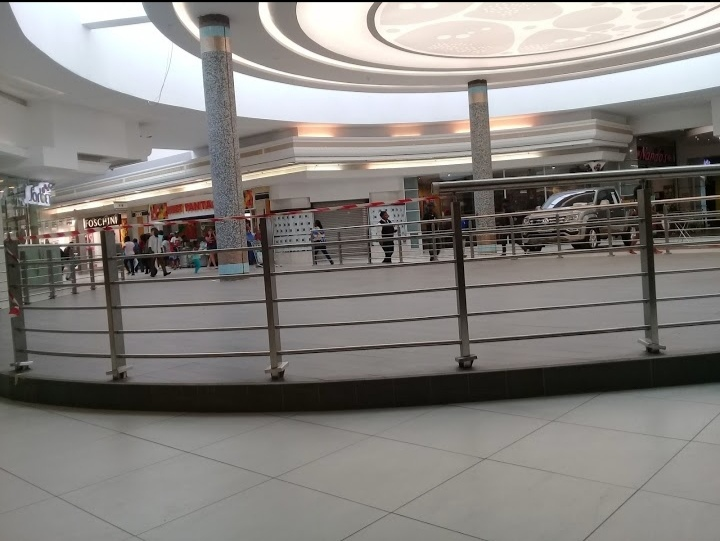
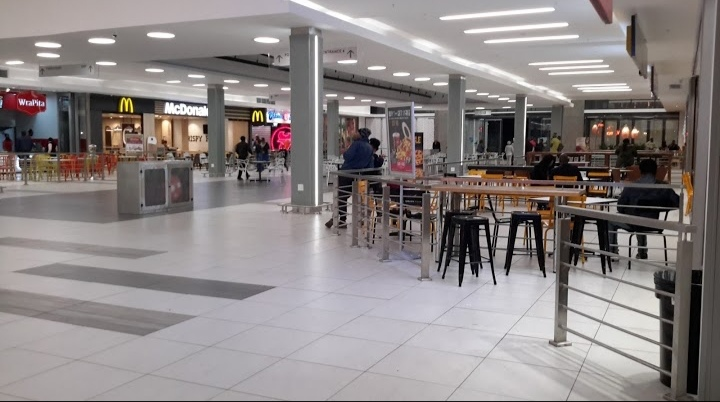
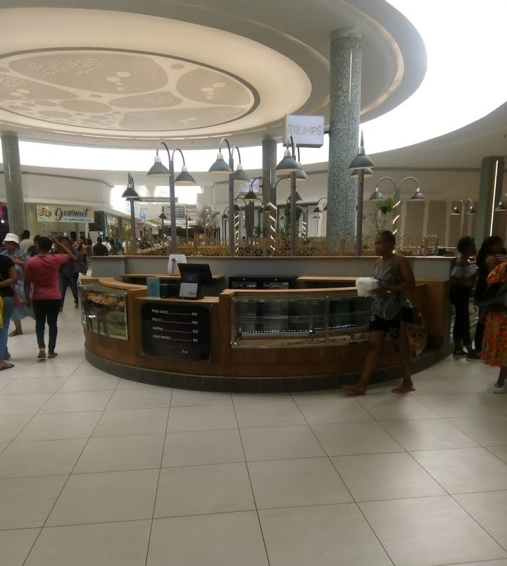

WE'D LOVE TO HEAR FROM YOU!
Shopping Centre is a busy mall in Roodepoort, Johannesburg. The centre is the third largest in the City of Gold and offers excellent retail and leisure options. The main tenants include Checkers, Pick n Pay and Pick and Pay Liquor, Game, Woolworths, and Takkie Town. Other shops include Fair Price, Pep Home, Crazy stores, CNA, Fashion World, Ackermans, Refinery , Studio 808 , Jet, Legit, Mr Price,Shoe City , and Truworths. There are also plenty of banking facilities, jewellery stores, and a pharmacy. The food court has plenty on offer, such as Mug & Bean, Chicken Licken, Debonairs, Fisher ways, Food Lovers Market, Maxi’s, Nando’s, Ocean Basket,Steers, and Macdonald's. Ster-Kinekor Junction screens all the latest blockbuster movies.
CENTRE STATISTICS
Construction Year: 1985 Shopping Centre Classification: Super Regional Centre Gross Lettable Area ( m² ): 109,418m2 No. Shops: 184 No. Entrances: 6
FACILITIES AND SERVICES OFFERED
 Westgate Super Regional Shopping Centre prides itself on providing its customers with a wide variety of world-class services that are aimed at catering for all our shoppers needs during their shopping trip. These services include an information kiosk; gift cards; store directories; wheelchair services; male, female and disabled toilet facilities, as well as baby changing and feeding rooms.
Information kiosks
Shoppers who are looking for store information, directions around the centre and local area information can visit the Information Kiosk. These friendly Westgate Centre's hosts are situated in front of Jet between Entrance 3 & 4 on the Upper Level.
Information Kiosk hours:
Monday to Thursday: 9am to 6pm
Friday: 9am to 7pm
Saturday: 9am to 5pm
Sunday and Public holidays: 9am to 2pm
Wheelchairs
Wheelchairs are available for hire from Westgate Centre's Security Control rooms at Entrance 4 and at Reception at Entrance 6. To hire a wheelchair, you will need positive identification, either a green barcoded ID or valid Driver's License, as well as a R100 security deposit, which is fully refundable.
Smoking areas
As per the new National smoking legislations, smoking in an enclosed and public area is illegal unless the area is deemed a smoking area. Please note that no smoking is allowed in the Undercover parking areas of the centre.
Baby Facilities
There is a baby changing Pod located at Entrance 2 where you can change, feed and rest your baby. Most of the toilets in the centre include family toilet facilities, the parent and child toilet (adult and junior-size toilets), baby changing rooms and feeding rooms.